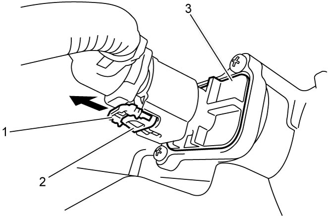

1C
| MAF Sensor with IAT Sensor-1 Removal and Installation |
Removal
1)Disconnect negative (–) cable at battery.
2)Remove engine cover. 
3)Disconnect connector from MAF sensor with IAT sensor-1 as follows.
a)Move connector lock pin (1) in arrow direction as shown in figure.
b)Push connector lock lever (2) and disconnect connector from MAF sensor with IAT sensor-1 (3).
4)Remove MAF sensor with IAT sensor-1 from air cleaner assembly.


 "Expand image")
Installation
Reverse removal procedure noting the following point.
 "Expand image")